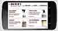

-
Small Business WordPress site
I created this customized WordPress website
-

Rich Media Mobile Microsite
I created this Rich Media Mobile Microsite
-
iOS Game Interface
I designed the user interface for this iOS game
-
WordPress Blog and News site
I produced and contributed to the development of this WordPress blog